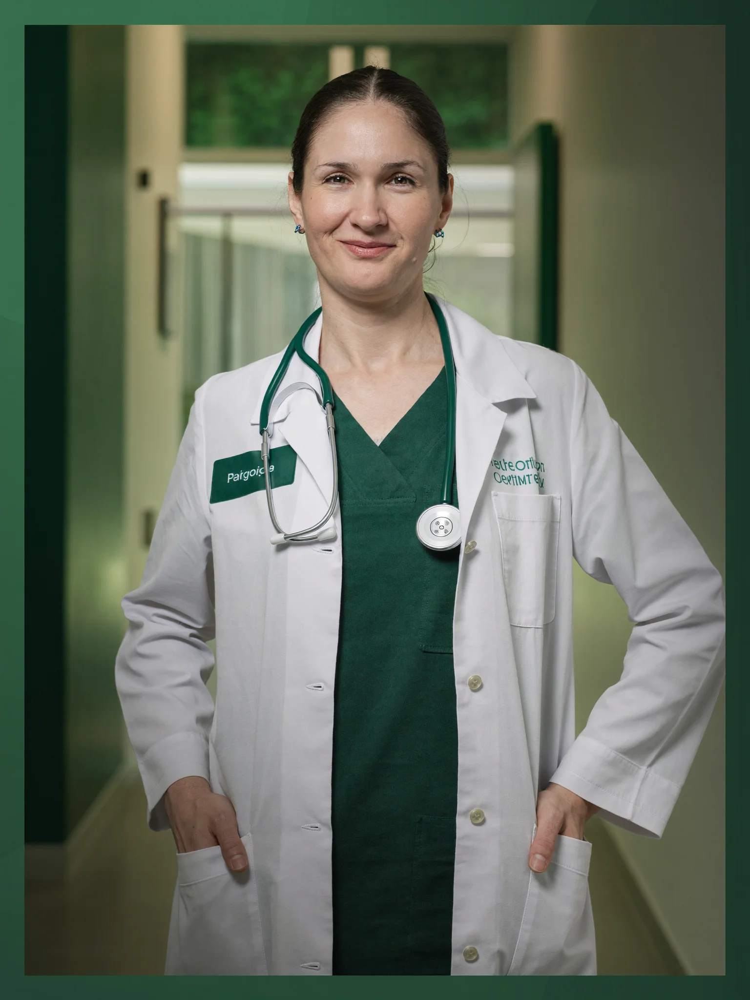

Klinik Laboratuvar
Klinik Laboratuvarımızda hemogramdan hormon panellerine, idrar incelemelerinden kültür-antibiyograma kadar tanıya destek olan tüm rutin tetkikler tek çatı altında gerçekleştirilir. Titizlikle yürütülen numune süreci ve düzenli kalite kontrol uygulamalarıyla, hekiminizin doğru değerlendirme yapabilmesi için güvenilir sonuçlar sunmayı amaçlıyoruz.
Doğru Tanının İlk Adımı: Klinik Laboratuvarımız
Klinik Laboratuvar birimimiz, merkezimize başvuran tüm hastalarımızın tanı ve tedavi süreçlerine laboratuvar verisiyle destek olmak amacıyla hizmet vermektedir. Biyokimya, hematoloji, hormon, idrar ve mikrobiyoloji alanlarındaki rutin tetkikler, güncel cihaz altyapısı ve deneyimli laboratuvar ekibimizle çalışılır. Check-up taramalarından kronik hastalık takibine, gebelik testlerinden enfeksiyon araştırmalarına kadar geniş bir yelpazede hizmet sunuyoruz. Amacımız, hekimlerimizin kararlarına dayanak oluşturan sonuçları güvenilir ve zamanında ulaştırmaktır.
Süreç, hekiminizin istediği tetkiklere göre kan alma birimimizde veya numune kabulde başlar; numuneleriniz barkod sistemiyle kayıt altına alınır ve iç-dış kalite kontrol uygulamalarıyla izlenen cihazlarda çalışılır. Rutin testlerin büyük bölümünde aynı gün içinde sonuç verilmesi hedeflenir; sonuçlarınız e-Nabız sistemine aktarılır ve değerlendirme her zaman hekiminiz tarafından yapılır. Bu sayfadaki bilgiler genel bilgilendirme amaçlıdır ve hekim muayenesinin yerini tutmaz.

Bu birimde bakılan durumlar
Aşağıdaki durumlar birimimizde değerlendirilir. Liste bilgilendirme amaçlıdır; kesin değerlendirme muayene sonrası yapılır.
- Kansızlık (anemi) ve enfeksiyon bulgularının değerlendirilmesi
- Diyabet tanı ve takibi (açlık kan şekeri, HbA1c)
- Tiroid ve diğer hormon dengesizliklerinin araştırılması
- Kolesterol ve lipid profilinin izlenmesi
- Karaciğer ve böbrek fonksiyonlarının takibi
- Vitamin ve mineral eksiklikleri (B12, D vitamini, demir, ferritin)
- İdrar yolu enfeksiyonları ile idrar-gaita incelemeleri
- Gebelik testi (Beta hCG) ve gebelik takibi tetkikleri
Uygulanan tetkik ve hizmetler
Hangi tetkiklerin gerekli olduğuna, muayene sonrasında hekiminiz karar verir. Tetkikler merkezimizde uygulanır.
Kan Alma Birimi
Tetkik süreciniz, deneyimli sağlık personelimizin görev yaptığı kan alma birimimizde başlar. Numune alımı hijyen kurallarına uygun, tek kullanımlık malzemelerle gerçekleştirilir. Çocuk hastalarımız ve kan alımından çekinen hastalarımız için sakin ve yönlendirici bir yaklaşım benimsenir.
Hemogram (Tam Kan Sayımı)
Kandaki alyuvar, akyuvar ve trombosit değerlerini ölçen temel tetkiktir; kansızlık ve enfeksiyon bulgularının değerlendirilmesinde hekiminize yol gösterir. Küçük bir kan örneğiyle çalışılır ve çoğunlukla aynı gün içinde sonuçlanır.
Biyokimya Panelleri
Kan şekeri, kolesterol, karaciğer ve böbrek fonksiyon testlerini içeren panellerdir; genel sağlık durumunuzun ve kronik hastalık takibinizin değerlendirilmesinde kullanılır. Bazı testler açlık gerektirdiğinden, randevu öncesinde ekibimiz sizi hazırlık koşulları hakkında bilgilendirir.
Hormon Testleri
Tiroid fonksiyonları, üreme hormonları ve gebelik testi (Beta hCG) dahil olmak üzere geniş bir hormon paneli çalışılmaktadır. Hormon düzeyleri gün içinde değişebildiğinden, numune alım zamanı hekiminizin önerisine göre planlanır; sonuçlar klinik bulgularınızla birlikte hekiminizce yorumlanır.
İdrar ve Gaita İncelemeleri
Tam idrar tahlili ile idrar yolu enfeksiyonları ve böbrek işlevlerine ilişkin bulgular değerlendirilir; gaita incelemeleri sindirim sistemi yakınmalarının araştırılmasına destek olur. Numune kapları birimimizden temin edilir ve doğru numune verme yöntemi konusunda size açıklama yapılır.
Kültür ve Antibiyogram
Enfeksiyona neden olan mikroorganizmanın belirlenmesi ve hangi antibiyotiğe duyarlı olduğunun saptanması amacıyla uygulanır. Üreme süreci nedeniyle sonuçlanması birkaç gün sürebilir; bu bekleme, tedavinin hekiminiz tarafından doğru planlanabilmesi için gereklidir.
Laboratuvar hakkında merak edilenler
Aşağıdaki yanıtlar genel bilgilendirme amaçlıdır ve hekim muayenesinin yerine geçmez.
Tahlile aç karnına mı gelmeliyim?
Açlık kan şekeri ve lipid profili gibi bazı testler 8-12 saatlik açlık gerektirir; hemogram gibi birçok test için ise açlık şart değildir. Hangi testler için nasıl hazırlanmanız gerektiği, randevunuz oluşturulurken ekibimiz tarafından size bildirilir. Kullandığınız ilaçlar varsa tetkik öncesinde hekiminize danışmanız önerilir.
Sonuçlarım ne zaman çıkar?
Hemogram, biyokimya ve idrar tahlili gibi rutin testlerin büyük bölümünde aynı gün içinde sonuç verilmesi hedeflenir. Kültür-antibiyogram gibi üreme gerektiren incelemeler ise birkaç gün sürebilir. Tahmini sonuç süresi, numuneniz alınırken size ayrıca iletilir.
Sonuçlarımı nasıl öğrenebilirim?
Sonuçlarınız e-Nabız sistemine aktarılır ve dilerseniz merkezimizden de temin edebilirsiniz. Değerlerin tek başına okunması yanıltıcı olabileceğinden, sonuçlarınızın klinik bulgularınızla birlikte hekiminiz tarafından değerlendirilmesi önerilir.
Referans aralığı dışında bir değer görürsem endişelenmeli miyim?
Referans aralığı dışındaki bir değer tek başına tanı koydurmaz; yaş, cinsiyet, kullanılan ilaçlar ve o günkü koşullar sonuçları etkileyebilir. Bu nedenle sonuçlarınızın anlamına hekiminiz karar verir ve gerekirse testin tekrarını planlar. Şiddetli göğüs ağrısı, nefes darlığı gibi acil bir durum yaşıyorsanız sonuçları beklemeden 112'yi aramalısınız.
İlgili rehber yazıları
Bu birimin hekimlerince hazırlanan bilgilendirme içerikleri.
Laboratuvar Tetkikleriniz İçin Randevu Alın
Check-up taraması, kronik hastalık takibi veya hekiminizin istediği tetkikler için Klinik Laboratuvar birimimizden gün alabilirsiniz. Randevu ve hazırlık koşulları hakkında bilgi için 0540 058 08 88 numaralı hattımızdan bize ulaşabilirsiniz.